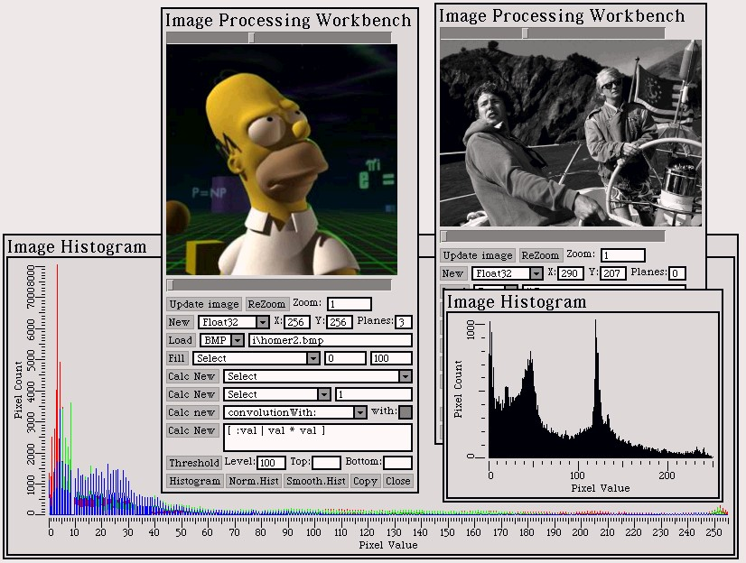

PhotoSqueak
1.0
PhotoSqueak
1.0
by Juan Manuel Vuletich
Back to Juan's studio


Part 1

Exercise 1
Introduction
It was asked to implement an Abstract Data Type for
dealing with images, including the implementation of several operations.
The teachers allowed us to use any tools. I choose to use Squeak Smalltalk,
because it eases fast development, compact and modularized code, and because
of the powerful development environment it has.
Requeriments
It is required to represent bidimensional images,
where the pixel values can be Integers, Reals (floats) or Bytes
(values between 0 and 255). It is also needed to represent images where
the pixel values are vectors (of the same size for every pixel in
a given image), of any of the numeric types. These can alse be considered
as made up by several "bands" or "planes" with scalar pixels. They
can also be understood as tridimensional images, with (x, y, z)
coordinates. The implemented methods allow considering the images in any
of the mentioned ways. The classes are Image and MultiPlaneImage.
Exercise 2
Introduction
It was required to implement an Abstract Data Type for
Image Histograms, both Static and Dynamic, with several operations.
Design
A histogram is static when it includes antries for every
possible pixel value. This means that no data structure adjustment is needed
when adding a new value. It is practical when there are not too much possible
pixel values. I decided to implement static histograms only for Byte
images. The entries are stored in an Array with size 256, indexed
by the pixel values. See Unsigned8ImageHistogram class.
A dynamic histogram only has entries for the pixel
values actually present in the image. This makes possible to have images
with a huge quantity of possible pixel values. For example, Integer
or Float image pixels can have 232 different values.
Of course, any reasonable sized image will only use a small subset, because
the pixel count will always be much smaller than 232. It would
be impossible to store so huge arrays, but if the image fits in memory,
so the dynamic histogram will do. See ImageHistogram class.
I also included ApproximateImageHistogram class,
that does not keep track of every pixel value. Instead, it divides pixel
values in groups or segments. This gives better visualization and is usually
more useful.
See also MultiPlaneImageHistogram class.